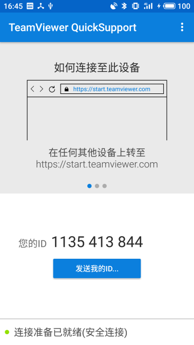
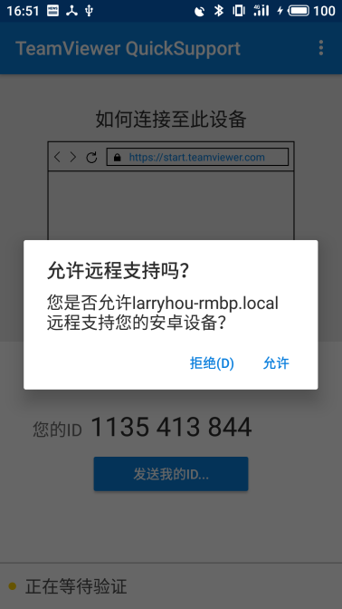

LARRY HOU
Jan 7, 2019
adb [command]devices | help | version | connect | disconnect | bugreport | connect | devices | disable-verity | disconnect | emu | enable-verity | forward | get-devpath | get-serialno | get-state | help | install | install-multiple | jdwp | keygen | kill-server | logcat | ppp | pull | push | reboot | reconnect | remount | reverse | root | shell | sideload | start-server | sync | tcpip | uninstall | unroot | usb | version | wait-for[-TRANSPORT]-STATE
logcat | shell | pull | push | install
$ adb devices -l
List of devices attached
721QECRK2TCHA device usb:336658432X product:meizu_M6Note_CN model:M6_Note device:M6Note transport_id:5
d5e5e93a device usb:336855040X product:PBFM00 model:PBFM00 device:PBFM00 transport_id:4# 选择设备
$ adb -s 721QECRK2TCHA shell
M6Note:/ $
# 更换设备
$ adb -s d5e5e93a shell
PBFM00:/ $ |  |  |